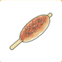
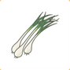
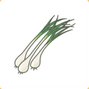
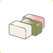

Friends
Friends will occasionally visit the house. New friends will arrive as you obtain more collectibles (いっぴん, the left tab of the collection book.) Bunbun may show up after getting 3 collectibles, and offers more clovers than Maimai. Pukapuka may show up after getting 6 collectibles, and offers more clovers and tickets than Bunbun. Each of the friends that visit have their own preferences.
まいまい/Maimai

まいまい/Maimai is sometimes used to refer to snails,
though it is not as commonly used as カタツムリ/katatsumuri,
somewhat similar feline/cat in English.
Reaction of "They're glad (喜んでいます)"
Reaction of "They look happy (嬉しそうです)"

 

Reaction of "They're full (お腹がいっぱいです)"

Reaction of "They can't eat any more (もう食べられません)"
ぶんぶん/Bunbun
ぶんぶん/Bunbun is the ononmatopoeia for bees,
like buzz in English.
Reaction of "They're glad (喜んでいます)"
Reaction of "They look happy (嬉しそうです)"
Reaction of "They're full (お腹がいっぱいです)"
Reaction of "They can't eat any more (もう食べられません)"
ぷかぷか/Pukapuka
ぷかぷか/Pukapuka is the ononmatopoeia for
something floating in water.
Reaction of "They're glad (喜んでいます)"
Reaction of "They look happy (嬉しそうです)"
Reaction of "They're full (お腹がいっぱいです)"
???
Reaction of "They can't eat any more (もう食べられません)"